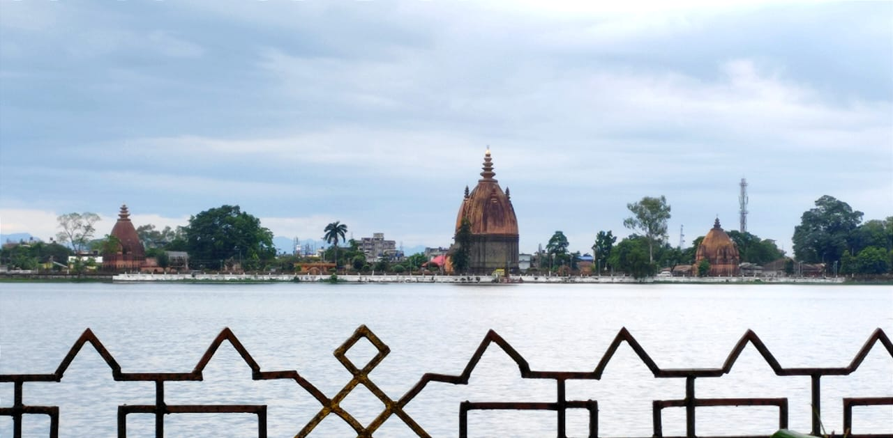

Sivasagar is a city in assam and headquarters of the Sivasagar
district, Assam. Sivasagar is situated about 360 kilometers (224 mi)
northeast of Guwahati. It is well known for its Ahom palaces and
monuments. Sivasagar is an important centre for tea and oil
industries today. Sivasagar is a part of Jorhat (Lok Sabha
constituency). Akhil Gogoi is the current MLA of Sibsagar (Vidhan
Sabha constituency).
Dating back to the ahom dynasty,this cultural town is full of
historic tourist attractions from forts with underground
architechture to numerous temples.It provides various tourist
attractions related to architectural marvels,history and
culture.some of the most popular places here include siva dol,rang
ghar,talatal ghar,joy dol,sivasagar tank,joysagar tank,kareng
ghar,ghanashyam dol,namdang rock bridge, charaideo maidams
etc.Besides them their is a Ahom museum that contains a large number
of details about the dyansty.Also their are many other historical
places whose are not in highlight because of lack of proper steps &
importance from the govt.
